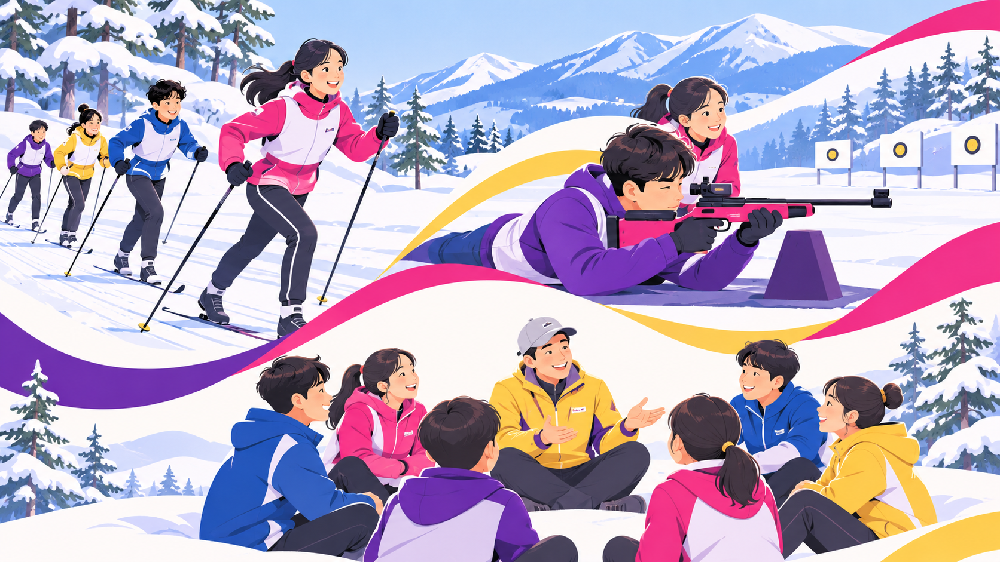

동계스포츠
스키점프, 바이애슬론, 슬라이딩 등 평창의 동계스포츠를 경험해요.

몸을 움직이고 마음을 나누며
더 넓은 세상을 만나요.
수호랑의 스포츠 체험, 가치교육, 지역문화체험을 살펴보세요.
아래는 참고 사이트의 기존 프로그램과 기획 아이디어를 소개합니다. 실제 운영 종목과 일정은 캠프별 공지에서 확인해 주세요.
수호랑 캠프의 기존 소개를 바탕으로 했습니다.
스키점프, 바이애슬론, 슬라이딩 등 평창의 동계스포츠를 경험해요.
경기장과 대회의 유산을 살펴보며 스포츠 이야기를 나눠요.
평화와 페어플레이, 서로를 존중하는 마음을 배워요.
서로 다른 경험을 이해하고 함께할 수 있는 방법을 생각해요.
강원도 지역의 문화와 전통을 만나며 경험의 폭을 넓혀요.
참고: 수호랑 캠프 원문 ↗
2026 참가학생 만족도 조사에 포함된 동계스포츠 체험 항목을 소개합니다.
속도와 움직임이 만나는 슬라이딩 체험
균형을 잡고 한 걸음씩 나아가는 스키 체험
호흡과 집중을 배우는 체험
스키점프의 도전 정신을 만나는 시간
새로운 높이에 도전하며 친구를 응원하는 시간
2026 수호랑 캠프 조사에 포함된 체험의 예시입니다. 프로그램은 운영 회차와 현장 여건에 따라 달라질 수 있습니다. 일정과 참여 조건은 해당 회차의 안내를 확인해 주세요.
체험의 이야기를 더 자세히 만나보세요.
동계스포츠 자세히 보기동계스포츠부터 가치교육과 지역문화까지, 수호랑과 함께 세 가지 경험을 만나보세요.

동계스포츠에 도전하며 새로운 즐거움을 만나요.
올림픽 가치와 페어플레이를 함께 생각해요.
평창의 문화와 친구들과의 추억을 담아요.